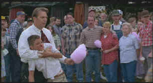

| War,
The/B+,A |
| Universal/1994/126m/ANA
185 |
The War exhibits a
remarkable sensibility in capturing one dramatic summer of childhood in rural Mississippi during
the height of the Vietnam War. It works magnificently when it sticks with the purity and simplicity
of its vision on this level, but, if it is indeed attempting an allegorical pass at the futility of
the Vietnam War, it falls short of the same insight.
Most of the film is simply splendid. Director Jon Avnet returns again to
the deep South of his successful directing debut Fried Green Tomatoes and raises the stakes
in the high flying game of movie making. The bucolic setting is captured in vivid images under the
camera direction of Geoffrey Simpson, collaborating again on The War, Avnet’s second
directing turn. I never found the camera intruding or straining to create in artificial terms. The
camera clearly subjugates itself to the director’s vision and the result is an astounding sense
of clarity of time, place, detail and people.
 |
|
Father teaches son in The War ©Universal
|
Though the vast majority of the film is
dominated by the child actors, Kevin Costner proves again what an incredible asset he can be to a
film. Costner plays Stephen Simmons, a veteran who has spent some hospital time recovering from the
psychological wounds of the war. Costner’s scenes with Elijah Wood, playing his son Stu, provide
the reality of a father/son bond that insures that The War will ultimately survive any
misstep along the way to its conclusion. Costner fits into the life of Stephen Simmons with
consummate ease and whether quietly holding his own in the most intimate scenes or standing up for
his son Stu at the County Fair, this Everyman actor is standing on solid ground. The young Elijah
Wood gives a performance molded from truth and innocence which he has not managed to find in his
later roles as a mature teenager.
Jon Avnet handles all the actors very well, but he does wonders with the
youngsters. Lexi Randall is outstanding as Stu’s sister Lidia, this time finding a more fertile
acting ground playing with real people as opposed to the blue screen dinosaurs of Jurassic Park.
Avnet moves the story along thoughtfully without destroying the sense of rural casualness that
invests so much strength in this film.
The central image of the film, the tree house, built with the help of Stu
and Lexi’s friends, is the device that precipitates the war between two factions of local
children. The film at this point borders on the ridiculous as the kids use a stash of weapons to
wage war over possession of the tree house. Though the finale is jarring in its lack of delicacy, The
War still remains a fine film. This is an almost perfect family film, though there are aspects
that call for caution with young children. Particular attention should be paid to the water tank
scenes to make sure that no kid gets the wrong idea.
The War has been made into an exquisite DVD. Colors are intense
yet with broad range. Fleshtones are accurate. Detail is immaculately captured. Check out some of
the difficult forest scenes. Every tree leaf in the background is distinguishable and stable. It's
a veritable torture test for NTSC video which The War passes with flying colors. The
War is a tribute to the wonderful photography of Geoffrey Simpson’s bringing to video life
the grand vision. The Dolby Digital 5:1soundtrack is extremely directional. The war scenes are
especially dynamic with explosive shells panning left to right and front to back with startling
intensity. Dialogue is crisp and easily understandable. Thomas Newman's exciting score packs punch
and is recorded with an enveloping openness. This is one war not to miss.
|
|

Selections from the feature archive include articles on Akira Kurosawa,
Frank Darabont, Blonde Bimbos, Hollywood
Street Gangs, or Vietnam:
The Hollywood Pariah, and many more...
Passing
the Celluloid Baton
Sharing movie experiences from generation to generation is a
precious gift. Click on the hands for a closer look.

Watching Movies or Watching Video
Don't lose sight of why you bought that DVD in the first place.

Film noir: The phrase hangs awkwardly on the tongue,
shadowy images peek out from behind half-closed doors. Click on the Noir and Noir
Again symbol for a look into the dark spaces of Hollywood's revisiting of film noir.
A Western is a Western is a Western

Place or time it's still a Western from John Ford's Drums
Along the Mohawk to John Sturges' Bad Day at Black Rock.

Want to compare the home run swing of Jack Elliot to former Japanese Home Run King
Daryl Spencer? Click on the baseball for Fastballs in
Japan.
 Why
do Al Pacino, Gene Hackman, Pat O'Brien and Goldie Hawn fall into a select group of actors? Find
out more by clicking the Hollywood
on the Sidelines symbol. Why
do Al Pacino, Gene Hackman, Pat O'Brien and Goldie Hawn fall into a select group of actors? Find
out more by clicking the Hollywood
on the Sidelines symbol.
|